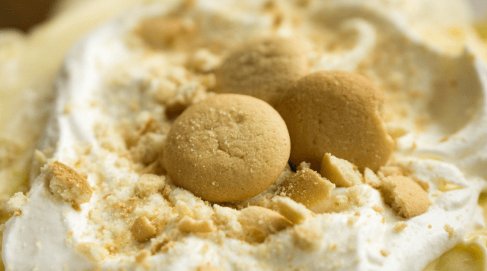

Banana Pudding Recipe

A quick and easy banana pudding recipe.
Ingrediants
- 1(5oz) of instant vanilla pudding mix
- 1/2 can of sweetened condensed milk
- 2 cups of cold milk
- 1 tbsp vanilla extract
- 1(12oz) container frozen whipped topping(thawed)
- 1(16oz) package vanilla wafers
- 6 bananas
Directions
- Mix vanillia pudding, condensed milk, cold milk and vanilla extract
- Layer bottom of a medium glass serving dish with vanilla wafers
- Layer banana slices ontop(the riper the sweeter)
- Spread pudding mix
- Repeat layering until satisfied
- Top off with freshly whipped cream (or cool whip)
- Chill for 3-4 hours before serving